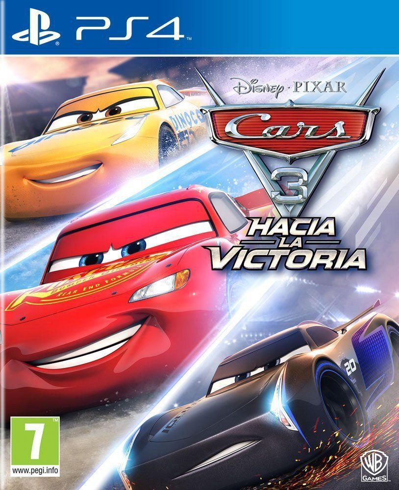
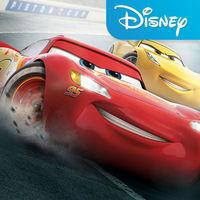
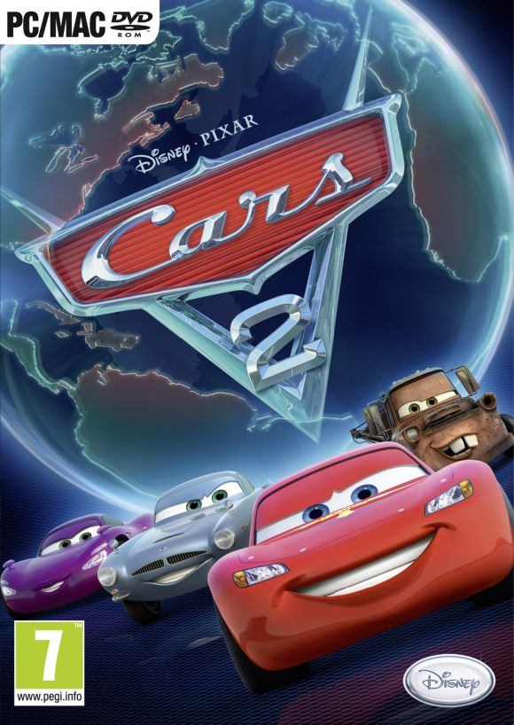
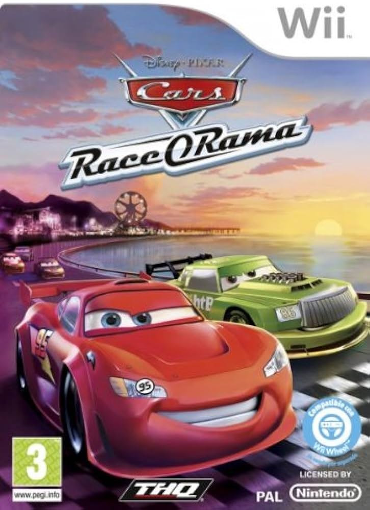

| Título | Resumo | Datos técnicos | Foto |
|---|---|---|---|
| Cars 3: Hacia la victoria | Cars 3: Hacia la victoria es el nuevo título de conducción arcade basado en la película de Pixar. A cargo de Avalanche Software, el juego presentará seis modos de juego, un modo de desafío y batalla para jugar con amigos y familiares. | Fecha de lanzamiento: 7/7/2017
Desarrollo: Avalanche Software Producción: Warner Bros. Interactive Entertainment Distribución: Warner Bros. |
 |
| Cars: La Liga de Rayo | Cars: Lightning League es un apasionante videojuego móvil de carreras de coches inspirado en la aclamada película de Disney Pixar 'Cars'. De hecho, el jugador debe ponerse a los mandos de Rayo McQueen, protagonista del film. Sin duda, un título capaz de deparar muchas emociones fuertes. | Desarrollo: Disney Electronic Content / Inc.
Producción: Pixar Distribución: App Store |
 |
| Cars 2: El Videojuego | Cars 2 es el videojuego oficial de la película de Disney y Pixar, en el que correremos con nuestros personajes preferidos en una serie de circuitos, uniéndonos a la academia de espías Chrome. Cuenta con numerosos modos de juego, entre ellos uno para cuatro jugadores. | Fecha de lanzamiento: 2/12/2011 Desarrollo: Disney Interactive Producción: Disney Interactive Distribución: Nintendo |  |
| Cars Race-o-Rama | Cars: Race-O-Rama es un juego de aventuras de carreras en el que el jugador controla al protagonista de Cars y piloto de la Copa Pistón Rayo McQueen. El juego cuenta con cinco mundos abiertos no lineales, incluyendo Radiador Springs. | Fecha de lanzamiento: 30/10/2009 Desarrollo: THQ Producción: THQ |  |
|
Empresa 100% Real |
Copyright 2024 | Al usar esta página aceptas el uso de cookies |